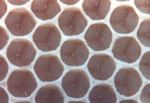
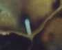

Lo stadio di uovo è di 3 giorni per tutti gli individui (operaia, fuco e regina). Viene deposto dall'ape regina, che inserisce l'addome all'interno della celletta del favo, (controllando prima - utilizzando le antenne - che la cella sia vuota e pulita) facendolo aderire esattamente al centro. Ne depone in continuazione, anche migliaia al giorno.